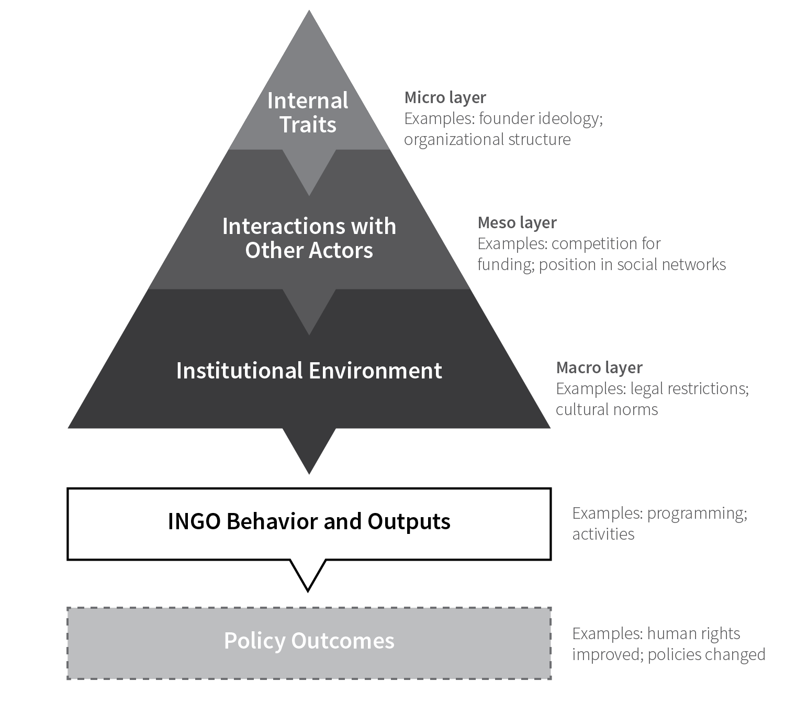

Internal, Interactive, and Institutional Factors: Towards a Unified Theory of INGO Behavior
Study NGOs?
View behavior; policy
with a new framework.
Andrew Heiss and Tana Johnson, “Internal, Interactive, and Institutional Factors: Towards a Unified Theory of INGO Behavior,” International Studies Review 18, no. 3 (September 2016): 528–41, doi: 10.1093/isr/viv014.
Abstract
Recent scholarship works to open the “black box” of international non-governmental organizations (INGOs), explaining their activities without conventional assumptions of altruism and high-mindedness. We review Borders Among Activists by Sarah Stroup, The Opening up of International Organizations by Jonas Tallberg, et al., and Internal Affairs by Wendy Wong and pinpoint how each book makes important contributions to understanding the determinants of INGO activities. After developing an organizing framework that permits careful analysis of the internal, interactive, and institutional factors that influence policy outcomes, we demonstrate the merits of the framework by applying it to each book. We evaluate each work’s contributions to individual layers in the framework, locating each book within its intended scholarly context. We identify ties between books, examining how each work implicitly treats the other layers of our framework. The conclusion identifies a new research agenda for INGO studies and outlines promising avenues for future INGO scholarship.
Important figures
Figure 1 from the paper, showing a unified framework for understanding the types of influences on INGO behavior and policy outcomes. The triangular shape conveys the specificity of the layers: from narrow “micro” phenomena at the internal layer to much wider “macro” phenomena at the institutional layer.

Books reviewed
- Sarah S. Stroup, Borders among Activists: International NGOs in the United States, Britain, and France (Ithaca, New York: Cornell University Press, 2012), doi:
10.7591/9780801464256. - Jonas Tallberg, Thomas Sommerer, Theresa Squatrito, and Christer Jönsson, The Opening Up of International Organizations: Transnational Access in Global Governance (Cambridge: Cambridge University Press, 2013), doi:
10.1017/cbo9781107325135. - Wendy H. Wong, Internal Affairs: How the Structure of NGOs Transforms Human Rights (Ithaca: Cornell University Press, 2012), doi:
10.7591/9780801466069.
BibTeX citation
@article{HeissJohnson:2016,
Author = {Andrew Heiss and Tana Johnson},
Doi = {10.1093/isr/viv014},
Journal = {International Studies Review},
Month = {9},
Number = {3},
Pages = {528--41},
Title = {Internal, Interactive, and Institutional Factors: Towards a Unified Theory of {INGO} Behavior},
Volume = {18},
Year = {2016}}